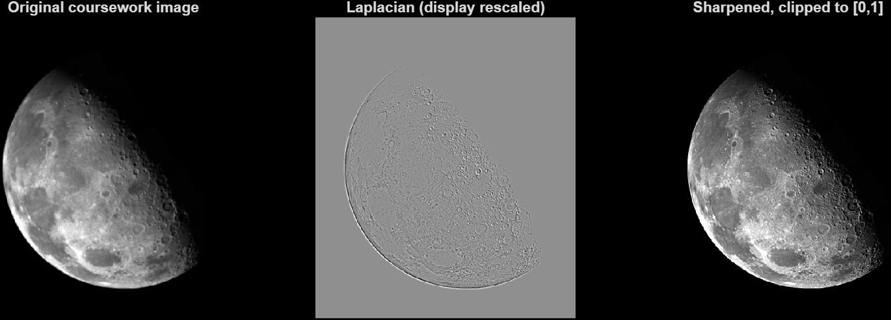
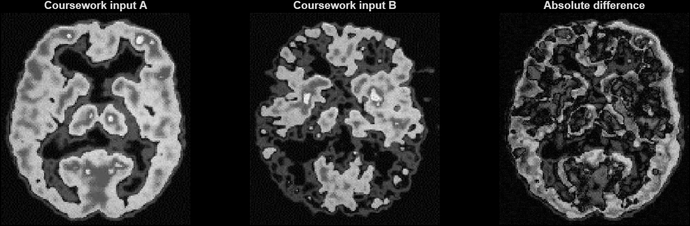

پروژههای منتخب
کد، مثال و یادداشت از کارهای دانشگاهیام.


MATLAB
پردازش تصویر با متلب
روی دو تمرین کار کردم: مقایسه تصاویر خاکستری و واضحسازی تصویر با
فیلتر لاپلاسین. توابع، تصاویر ورودی و دمویی که نتایج را دوباره
تولید میکند، در مخزن قرار دارند.
اختلاف پیکسلها، تغییر شدت تصویر را نشان میدهد. این تمرین برای
تشخیص بیماری نیست.
دیدن پروژه ↗
PHP + MYSQL
کتابخانه داستان
کاربران
↔
داستانها
↔
دستهبندیها
یک کتابخانه داستان فارسی با PHP و MySQL ساختم. حساب کاربری،
داستانها، دستهبندیها و نظارت مدیر در این پروژه کنار هم قرار
گرفتهاند و اطلاعات در یک پایگاه داده رابطهای نگهداری میشوند.
پروژهای دانشگاهی برای اجرای محلی، همراه با راهاندازی و آزمونهای
یکپارچهسازی.
دیدن پروژه ↗
CPN TOOLS
مدل چراغ راهنمایی
Red
→
Green
→
Yellow
این مدل شبکه پتری زماندار را با CPN Tools شروع کردم تا وضعیتها و
زمانبندی را بررسی کنم. فایل اصلی را نگه داشتهام و بخشهایی را که
هنوز نیاز به کار دارند توضیح دادهام.
در حال تکمیل: شبیهسازی و بررسی سبز نشدن همزمان مسیرهای متقاطع
هنوز تأیید نشدهاند.
دیدن پروژه ↗
یادداشتهای مطالعاتی
سیزده موضوعی که در دانشگاه مطالعه و ارائه کردم، به فارسی و انگلیسی.
نسخه PDF اصلی ارائهها و گزارشها را هم در
پوشه PDFها
گذاشتهام.